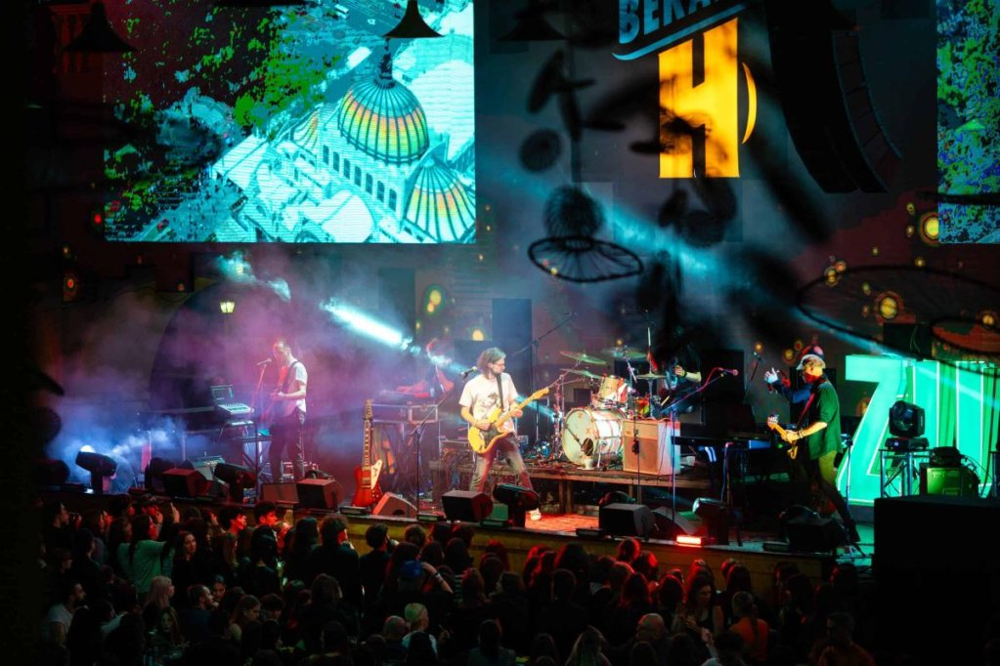

Puterea Muzicii: De ce Muzica Ne Face Să Ne Simțim Împliniți
Muzica este un limbaj universal care evocă amintiri și emoții, influențând starea de spirit și conectându-ne cu ceilalți.
Fie că ne face să ne simțim energici sau ne ajută să reflectăm, muzica joacă un rol esențial în viața noastră.
Ea reduce stresul, creează legături și ne oferă un sentiment de apartenență, fiind o forță care îmbogățește experiențele și ne unește.
Citeste mai mult
.jfif)
Muzica: Cheia Invizibilă către Lumea Interioară
Este uimitor cum o piesă instrumentală poate spune o poveste mai bine decât cuvintele sau cum un simplu ritm poate uni o mulțime de străini într-o singură bătaie de inimă.
Fie că suntem singuri în camera noastră sau într-o mare de oameni la un festival, muzica este busola noastră emoțională, arătându-ne direcția chiar și atunci când ne simțim pierduți.
Citeste mai mult

Sunetele Vieții: Cum Ne Transforma Muzica Zilnic
O melodie familiară poate transforma o zi monotonă într-o aventură plină de nostalgie.
Muzica ne însoțește în momentele cele mai intime, fie că suntem în drum spre muncă, pregătim cina sau ne relaxăm după o zi grea.
Este un refugiu, un limbaj care vorbește direct sufletului nostru, indiferent de cuvintele pe care le folosim în mod obișnuit.
Citeste mai mult